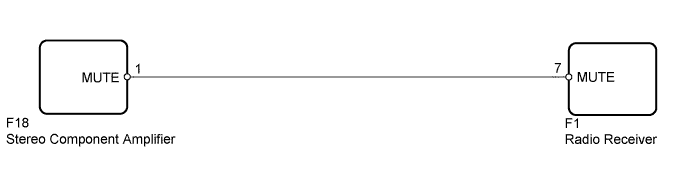
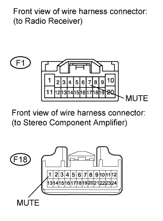

AUDIO AND VISUAL SYSTEM (w/o Multi-display) > Mute Signal Circuit between Radio Receiver and Stereo Component Amplifier |

| 1.CHECK HARNESS AND CONNECTOR (RADIO RECEIVER - STEREO COMPONENT AMPLIFIER) |
 |
Disconnect the F1 receiver connector.
Disconnect the F18 amplifier connector.
Measure the resistance according to the value(s) in the table below.
| Tester Connection | Condition | Specified Condition |
| F1-7 (MUTE) - F18-1 (MUTE) | Always | Below 1 Ω |
| F1-7 (MUTE) - Body Ground | Always | 10 kΩ or higher |
|
| ||||
| OK | |
| 2.CHECK STEREO COMPONENT AMPLIFIER ASSEMBLY (OPERATION) |
Replace the stereo component amplifier with a normal one and check if it operates normally (Click here).
|
| ||||
| OK | ||
| ||